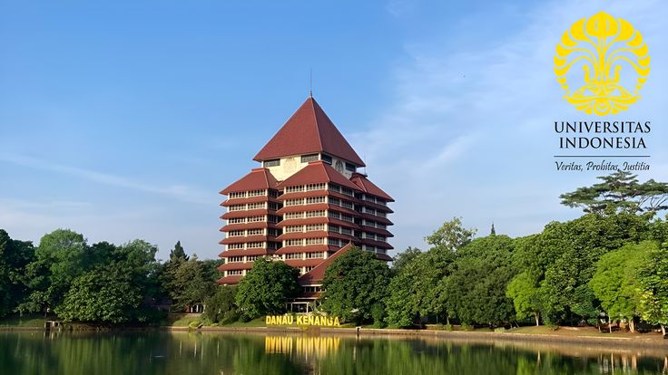

Universitas Indonesia (UI) adalah salah satu universitas negeri terbaik di Indonesia yang berlokasi di Depok, Jawa Barat. UI menawarkan berbagai program studi dan dikenal dengan pendidikan, penelitian, serta prestasinya yang unggul.